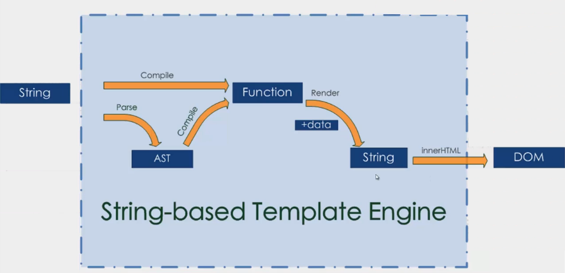
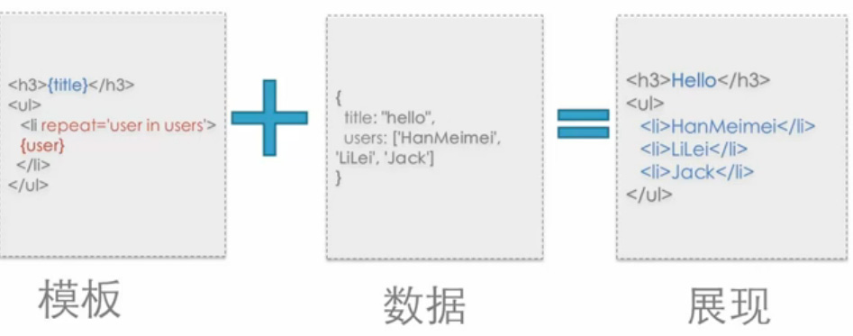
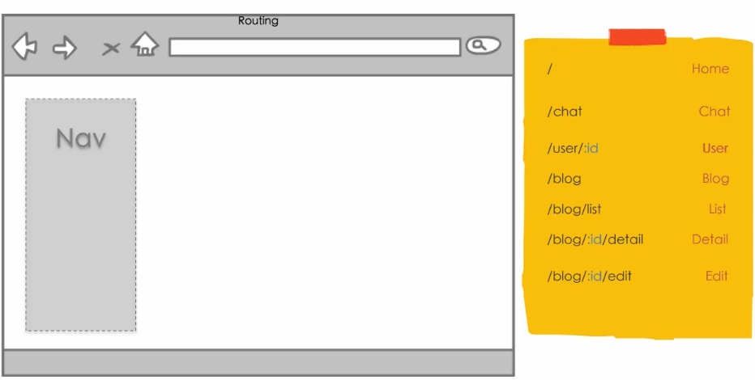

框架和库
库(lib)具有一下三个特点：
1、是针对特定问题的解答，具有专业性
2、你控制应用的流程
3、被动的被调用
框架(framework)具有以下三个特点：
1、具有控制反转(inverse of control)的功能
2、决定应用程序的声明周期
3、一般来说,集成了大量的库
如下图所示，框架会在特定的时间要求程序执行某段代码。框架决定了什么时候调用库，决定了什么时候要求代码去执行特定功能

而实际上，一个库有事也可以称之为框架，而库里面继承的方法称之为库
框架和库的区别不是由实际大小决定，而是有思考角度来决定。框架和库世界上可以统称为解决方案
解决方案
前端开发中的解决方案主要用于解决以下7各方面的问题：
1、DOM
2、Communication(通信)
3、Utililty(工具库)
4、Templating(模版集成)
5、Component(组件)
6、Routing(router路由)
7、architecture(架构)
为什么使用外部的解决方案
1、提高开发效率
2、可靠性高(浏览器兼容性，测试覆盖)
3、配备优良，如文档、demo及工具等
4、代码设计合理、更优雅
5、专业性高
如果问题过于简单，或者备选框架的质量和可靠性无法保证，再或者无法满足业务需求，则不应该选择外部的框架。如果团队中已经有相关的累积，就更不需要使用了
一般地，解决方案要实际开发中有以下3种使用方式：
1、开放式：基于外部模块系统，并自由组合
2、半开放式：基于一个定制的模块系统，内部外部解决方案共存
3、封闭式：深度定制的模块系统，很少需要引入外部模块
DOM
接下来，将针对解决方案中提到的7个问题进行分别介绍，首先是DOM
关于DOM，主要包括Selector(选择器)、Manipulation(DOM操作)、Event(事件)、Animation(动画)这四个部分
DOM相关的解决方案主要用于提供以下操作
1、提供便利的 DOM 查询、操作、移动等操作
2、提供事件绑定及事件代理支持
3、提供浏览器特性检测及 UserAgent 侦测
4、提供节点属性、样式、类名的操作
5、保证目标平台的跨浏览器支持
【常用方案】
常用的DOM解决方案有 jQuery、zepto.JS、MOOTOO.JS等
jQuery是曾经风靡一时的最流行的前端解决方案，jQuery特有的链式调用的方式简化了javascript的复杂操作，而且使人们不再需要关心兼容性，并提供了大量的实用方法
zepto是jQuery的精简版，针对移动端去除了大量jQuery的兼容代码，提供了简单的手势，部分API的实现方式不同
mootools源码清晰易懂，严格遵循Command-Query(命令-查询)的接口规范，没有诸如jQuery的两义性接口。还有一个不得不提的特点是，使用选择器获取的是DOM原生对象，而不是被包装过的对象。而它支持的诸多方法则是通过直接扩展DOM原生对象实现的，这也是它的争议所在
相比较而言，最稳妥的DOM解决方案是jQuery
【专业领域】
上面的解决方案用于解决DOM一般的通用问题。随着技术的发展，DOM的专业领域出现一些小而精致的解决方案
1、手势
Hammer.JS包括了常见手势封装（Tab、Hold、Transform、Swifp）并支持自定义扩展
2、局部滚动
iscroll.JS是移动端position:fix + overflow:scroll的救星
3、高级动画
Velocity.JS可以复杂动画序列实现，不仅局限于 DOM
4、视频播放
Video.JS类似原生 video 标签的使用方式，对低级浏览器使用 flash 播放器
通信
关于通信，主要包括XMLHttpRequest、Form、JSONP、Socket等
通信相关的解决方案主要用于提供以下操作
1、处理与服务器的请求与相应
2、预处理请求数据与响应数据 Error/Success 的判断封装
3、多类型请求，统一接口（XMLHttpRequest1/2、JSONP、iFrame）
4、处理浏览器兼容性
【常用方案】
除了jQuery等，其他常用的通信解决方案有Reqwest、qwest等
Reqwest支持JSONP，稳定性高，IE6+支持，CORS 跨域，Promise/A 支持
qwest代码少、支持XMLHttpRequest2、CORS 跨域、支持高级数据类型（ArrayBuffer、Blob、FormData）
【专业领域】
对于实时性要求较高的需求可以使用socket.io，它实时性高，支持二进制数据流，智能自动回退支持，且支持多种后端语言
工具包
工具包(Utililty)的主要职责包括以下：
1、提供 JavaScript 原生不提供的功能
2、包装原生方法，使其便于使用
3、异步队列及流程控制
【常用方案】
常用的工具包解决方案有es5-shim、es6-shim、underscore、Lodash等
上面提到的shim，也是经常听到的一个词，翻译过来是垫片的意思。对于es5、es6等标准包括的一些新方法，由于浏览器兼容性不高，所以无法直接使用它们。这时，就需要在保证实现与规范一致的基础上，来扩展原型方法，这种做法就叫做shim。好处在于，实际上就是在使用javascript的语法，但不用去考虑低版本浏览器的兼容性问题
es5-shim 提供 ES3 环境下的 ES5 支持
es6-shim 提供 ES5 环境下的 ES6支持
underscore 提供兼容 IE6+ 的扩展功能函数
Lodash是underscore 的高性能版本，方法多为 runtime 编译出来的
模板
模板主要包括三类：基于字符串的模板(String-based)、基于DOM的模板(DOM-based)、活动模板(Living Template)
1、基于字符串的模板(String-based)，解决方案包括(dustjs、hogan.js、dot.js)

原理如下：输入一段模板字符串，通过编译之后 ，生成一段Function，通过Function的render或类render函数渲染输入的数据data，输出模板字符串，字符串通过innerHTML或类似的方式渲染成最后的DOM结构。这类模板的问题在于通过字符串生成DOM之后就不再变化，如果在改变输入的数据data，需要重新render，重新生成一个全新的DOM结构，性能较差。但该模板可以在服务器端运行

2、基于DOM的模板(DOM-based)，解决方案包括(angularjs、vuejs、knockout)

原理如下：将输入的字符串模板通过innerHTML转换为一个无状态DOM树，然后遍历该节点树，去抓取关键属性或语句，来进行相关的绑定，进而变成了有状态的DOM树，最终导致DOM树会与数据模型model进行绑定。这类模板的特点是修改数据时，会使有状态的DOM树实时更新，运行时性能更好，也会保留 DOM 中的已有事件

3、活动模板(Living Template)，解决方案包括(RegularJS、RactiveJS、htmlbar)

原理如下：活动模板融合了字符串模板和DOM模板的技术，模板字符串string通过自定义的解析器DSL-based Parse解析成AST(抽象语法树)，通过遍历AST，使用createElement()、setAttribute()等原生DOM方法，生成DOM树，最终导致DOM树会与数据模型model进行绑定。由于其内部完全不使用innerHTML，所以安全性较高

组件
组件(Component)的主要职责包括以下：
1、提供基础的 CSS 支持
2、提供常见的组件，如slider、Modal等
3、提供声明式的调用方式（类似 Bootstrap）
【常用方案】
常用的组件解决方案有Bootstrap、Foundation等，两者具有移动端first的流式栅格系统，由sass组织，可定制UI
Bootstrap封装了常用的组件，是目前最火的组件解决方案
Foundation在国内知名度不高
路由
路由在单页系统中非常重要，主要职责如下
1、监听 URL 变化，并通知注册的模块
2、通过 JavaScript 进行主动跳转
3、历史管理
4、对目标浏览器的兼容性支持
无论什么框架，在完成配置之后，内部都有如下图所示的类似的路由表。

【常用方案】
常用的路由解决方案有page.JS、Director.JS、Stateman、crossroad.JS等
page.JS类似 Express.Router 的路由规则的前端路由库
Director.JS可以前后端使用同一套规则定义路由
Stateman处理深层复杂路由的独立路优库
crossroad.JS老牌路由库，API 功能较为繁琐
架构
所有的架构(architecture)都是一个目的，就是解耦。解耦有很多方式，可以通过事件、分层等
市面上，有很多架构模式，包括MVC、MVVM、MV*等
架构的职责主要包括以下：
1、提供一种范式帮助（强制）开发者进行模块解耦
2、视图与模型分离
3、容易进行单元测试
4、容易实现应用扩展
以MVVM为例，如下图所示。它包括Model(数据层或模型层)、View(视图层)、ViewModel(控制层)
Model(数据层或模型层)表示数据实体，它们用于记录应用程序的数据
View(视图层)用于展示界面，界面是数据定制的反映，它包含样式结构定义以及VM享有的声明式数据以及数数据绑定
ViewModel(控制层)是View与Model的粘合，它通过绑定事件与View交互并可以调用Service处理数据持久化，也可以通过数据绑定将Model的变动反映到View中
【SPA】
要特点注意的是，MV* !== SPA(单页系统)
SPA应用程序的逻辑比较复杂，需要一种模式来进行解耦，但并不一定是MV*模式
####
最后推荐一个框架选型网站https://www.javascripting.com，该网站根据不同的需求的选择，给出当下流行的框架选型